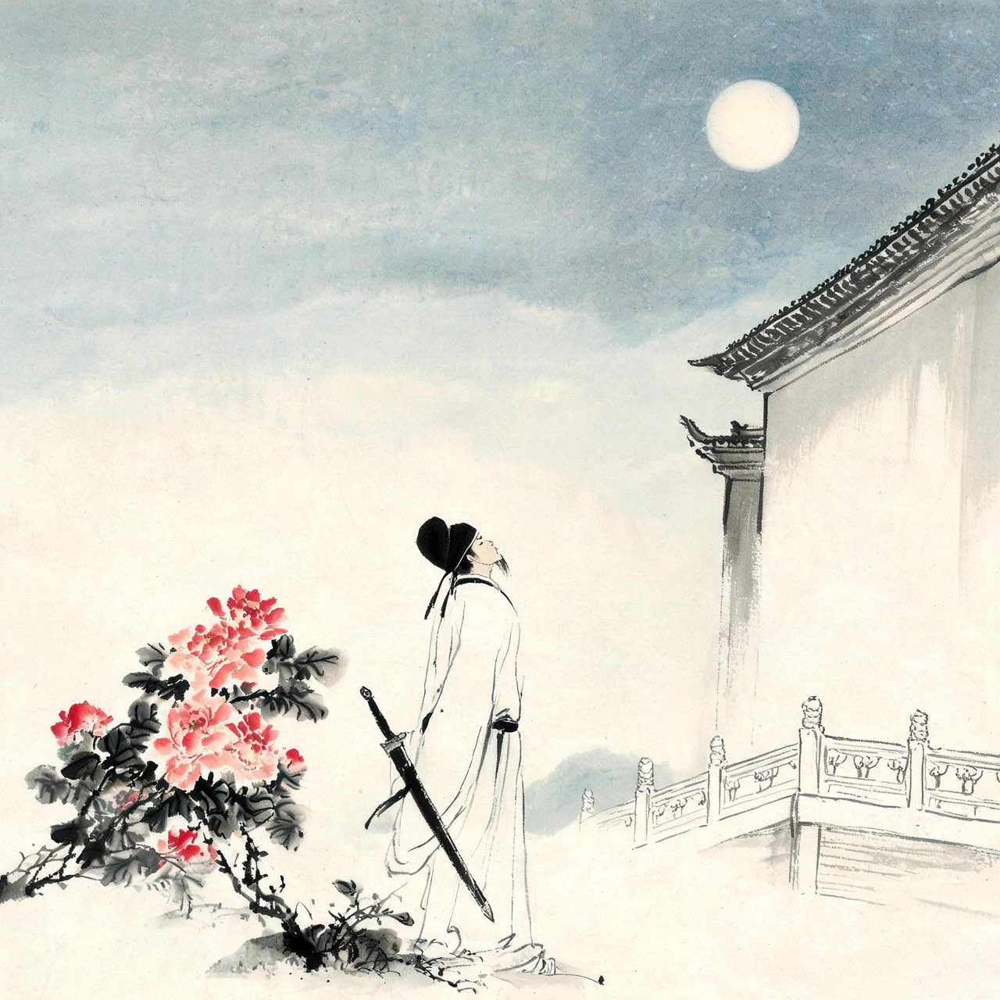

李白 · 742-744
长安
待诏翰林
天宝元年秋，长安的诏书到了。皇帝召你入京。四十二岁的你把两个孩子托付东鲁，杀鸡烹酒，高歌起舞——
南陵别儿童入京
白酒新熟山中归，黄鸡啄黍秋正肥。
呼童烹鸡酌白酒，儿女嬉笑牵人衣。
高歌取醉欲自慰，起舞落日争光辉。
游说万乘苦不早，著鞭跨马涉远道。
会稽愚妇轻买臣，余亦辞家西入秦。
仰天大笑出门去，我辈岂是蓬蒿人。
注
- '南陵'地望两说：皖南南陵县说、东鲁地名义说（参安旗说），场景地点从东鲁说
- 会稽愚妇轻买臣：用汉朱买臣典，买臣微时妻轻之，后买臣为会稽太守——或暗指身边人曾看轻自己
- 诏征原因：玉真公主（一说）与贺知章等荐引，详见研究文档
长安城里，太子宾客贺知章读到了你的《蜀道难》。这位八十多岁的老诗人读完，抬起头看你，说了一个词：谪仙——被贬下凡的仙人。
蜀道难（节选）
〔节选原诗开篇四句与中段'问君西游'段（至凋朱颜）；全篇为杂言乐府，复沓'蜀道之难，难于上青天'贯穿，另有'连峰去天不盈尺''剑阁峥嵘而崔嵬''侧身西望长咨嗟'等段〕
噫吁嚱，危乎高哉！
蜀道之难，难于上青天！
蚕丛及鱼凫，开国何茫然！
尔来四万八千岁，不与秦塞通人烟。
……
问君西游何时还？畏途巉岩不可攀。
但见悲鸟号古木，雄飞雌从绕林间。
又闻子规啼夜月，愁空山。
蜀道之难，难于上青天，使人听此凋朱颜！
注
- 贺知章呼谪仙人：李白自述'太子宾客贺公，于长安紫极宫一见，呼余为谪仙人'（《对酒忆贺监二首并序》），信史级；一说呼谪仙在贺读《蜀道难》之后（孟棨《本事诗》），此处取后者语境
- 《蜀道难》主旨异说极多：送友人说、讽玄宗幸蜀说、咏蜀地说等，本篇不作坐实，notes 存异
- 子规：杜鹃鸟，啼声哀切，蜀地最多
天宝二年暮春，兴庆池畔沉香亭，牡丹盛开。玄宗与杨贵妃赏花，说：赏名花，对妃子，焉用旧乐词为——召翰林李白进新词。你宿醉未醒，援笔立成——
清平调（其一）
云想衣裳花想容，春风拂槛露华浓。
若非群玉山头见，会向瑶台月下逢。
注
- 清平调三首为连章，此其一；'云想衣裳花想容'一句兼咏花与人
- 沉香亭事本出《松窗杂录》笔记，属'实录性笔记'，细节或有增饰
- 传说：相传命高力士脱靴，力士后进谗于贵妃（《酉阳杂俎》《松窗杂录》等）——正史无载，按传说处理，不入正文坐实

翰林待诏
入京之前，你以为的翰林是：参与机密，匡扶社稷，谈笑间定天下。
入京之后，你发现翰林待诏的日常是：宫中开宴，写诗助兴；贵妃赏花，写诗助兴；春日泛舟，写诗助兴。
你是文学侍从，不是宰相的料子——不，连料子的边都没摸到。玄宗欣赏你，像欣赏一只会写诗的鹦鹉。后世论者评玄宗待你，不过「倡优畜之」。
杜甫后来写你：「李白一斗诗百篇，长安市上酒家眠。天子呼来不上船，自称臣是酒中仙。」皇帝叫你，你不回去，你醉着。
醉是真的。谗言也是真的——有人在你背后说话，说给贵妃听，说给皇帝听。你渐渐发现，这座城里给天才准备的位置，只有一个：弄臣。
你上书，请还山。
注
- 「倡优畜之」语本《汉书·严助传》「俳优畜之」，系后世论者对李白待诏处境的概括，两《唐书》与范传正碑文均无此词
- 《饮中八仙歌》为杜甫天宝间所作，属同时人白描，可靠度高
- 遭谗说：李白《翰林读书言怀呈集贤诸学士》自述'青蝇易相点'，遭谗见于自述，谗者为何人史无明文
天宝三载春，诏下：赐金放还。客客气气地，长安把你请了出去。朋友们在酒肆为你饯行，金樽清酒，玉盘珍馐，你却停下杯子，拔剑四顾——
行路难（其一）
金樽清酒斗十千，玉盘珍羞直万钱。
停杯投箸不能食，拔剑四顾心茫然。
欲渡黄河冰塞川，将登太行雪满山。
闲来垂钓碧溪上，忽复乘舟梦日边。
行路难，行路难，多歧路，今安在？
长风破浪会有时，直挂云帆济沧海。
注
- 系年取天宝三载（744）离京时说，另有开元间初入长安说
- '珍羞'：羞通馐，今通行本或作'珍馐'；'直'通'值'——从底本
- 垂钓碧溪用吕尚（姜太公）磻溪垂钓典；乘舟梦日用伊尹梦乘舟过日月之边典——两位都是先穷后达的贤相